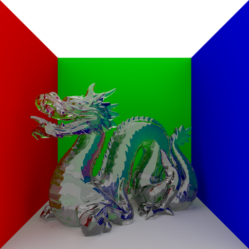
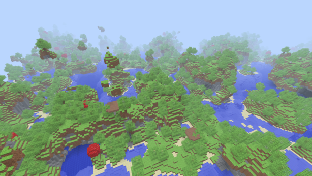
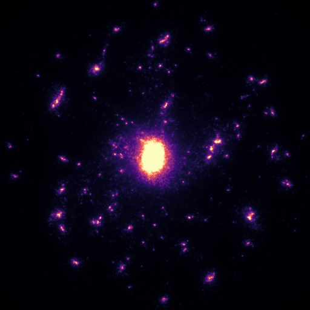
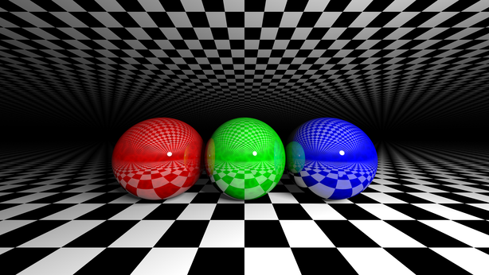
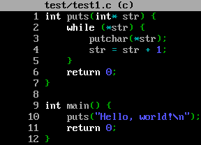
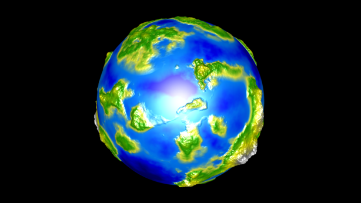
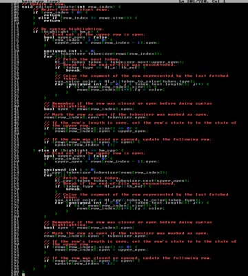

{kind=link}
{kind=link}
Hello, I am CobaltXII. You may know me under one of my other Internet nicknames, such as -Cobalt- or sonicxspriter. I am a computer enthusiast who enjoys writing programs in languages such as C or C++. I publish most of my creations on GitHub. On this website you will find a list of my major projects. Hopefully you will find something you like.
Major Projects
| CobaltXII/sterling | A naive pathtracer written in C++11 |
| CobaltXII/minceraft | A Minecraft clone written in C++11 |
| CobaltXII/cosmos | An OpenCL accelerated n-body simulation written in C++11 |
| CobaltXII/orb | A tiny raytracer written in C++11 |
| CobaltXII/Minesweeper | A Microsoft Minesweeper clone written in C++11 |
| CobaltXII/cxcc | A C compiler for x86-64 written in C++11 |
| CobaltXII/planet | A planet generator and renderer written in C++11 |
| CobaltXII/boss | A MS-DOS themed text editor written in C++11 |
Minor Projects
| CobaltXII/boiler | A graphics and rasterization framework built on top of SDL2 |
| CobaltXII/KrunkerToWavefront | Convert Krunker.io maps to Wavefront .obj and .mtl files |
| CobaltXII/vortext | Raymarched font written in JavaScript and GLSL |
| CobaltXII/img | 256-, 8- and true-color images in the terminal |
| CobaltXII/cxci | A C-like interpreter written in C++11 |
| CobaltXII/huffman | A Huffman compressor/decompressor written in C++11 |
| CobaltXII/fractals | A GPU-accelerated fractal explorer |
| CobaltXII/shaker | A GLSL sandbox for the desktop |
| CobaltXII/image_utility | Image utility baseplate using stb_image_write |
| CobaltXII/fastbayer8 | Fast 8-color Bayer dithering written in C++11 |
| CobaltXII/pulsed_ostream | A wrapper on std::ostream that adds a delay between characters |
Experiments (C++)
| .../additive | Additive blending |
| .../automata | Various cellular automata (with OpenMP acceleration) |
| .../balls | Ball physics simulation |
| .../barycentric | Triangle rasterization with vertex data interpolation |
| .../cloth | Cloth simulation with Verlet integration |
| .../dither | Various ordered dithering and error diffusion algorithms |
| .../dos | MS-DOS-styled GUI library |
| .../gl | 3-dimensional software rasterizer |
| .../gradient | Gradient generation utility |
| .../lights | Raycasted 2D lighting simulation |
| .../mandelbrot | Mandelbrot, Julia and Burning Ship fractals |
| .../matrix | Matrix (falling hacker text) simulation |
| .../minecraft | Port of Notch's raymarched Minecraft demo |
| .../neural | Neural network library with demonstrations |
| .../normals | Normal mapping experiment |
| .../optics | 2-dimensional optics simulation (reflection, refraction) |
| .../raster | 3-dimensional software rasterizer |
| .../sierpinski | Sierpiński triangle fractal |
| .../terminal | Code page 437 font headers |
| .../affine | 2-dimensional affine transformations (scale, rotate, shear) |
| .../bezier | Quadratic and cubic Bézier curve rasterization |
| .../blended_metaballs | Naive metaball renderer with color blending |
| .../cardioid | Cardioid renderer |
| .../circle_line | Circle-line intersection solver |
| .../clavet | Clavet fluid simulation |
| .../collisions | Static collision solver using the separating axis theorem (SAT) |
| .../dla | Particle-based diffusion limited aggregation (DLA) |
| .../doom_fire | Retro fire animation used in DOOM |
| .../doom_fire_2 | Retro fire animation used in DOOM (custom palette) |
| .../doom_fire_3 | Retro fire animation used in DOOM (with fireballs) |
| .../doom_fluid | Retro fire animation used in DOOM (with fluid simulation) |
| .../epicycles | Epicycle machine generator using Fourier transform |
| .../fire | Old-school fire demoscene |
| .../flow | Perlin noise flow field |
| .../fluid | Fluid simulation (port from unidentified C source) |
| .../fluid_image | Fluid simulation (port from unidentified C source) |
| .../fourier_series | Fourier series visualization (natural square wave) |
| .../fourier_series_saw | Fourier series visualization (natural sawtooth wave) |
| .../fourier_transform | Fourier transform experiment (triangle wave) |
| .../fourier_transform_2 | 2-dimensional Fourier transform experiment (Coding Train) |
| .../grid_dla | Grid-based diffusion limited aggregation (DLA) |
| .../heat_equation | Heat equation simulation |
| .../intersection | Line-line intersection solver |
| .../kernel | Image convolution via kernels (Guassian blur, sharpen, etc.) |
| .../marching_squares | Marching squares metaballs |
| .../multi_spatial_hash | Spatial hash grid acceleration structure |
| .../n_body | N-body simulation |
| .../n_body_image | N-body simulation |
| .../naive_metaballs | Naive metaballs |
| .../navier_squares | Marching squares Navier–Stokes fluid simulation |
| .../navier_stokes | Navier–Stokes fluid simulation |
| .../navier_stokes_color | Three-channel (RGB) Navier–Stokes fluid simulation |
| .../navier_stokes_image | Three-channel (RGB) Navier–Stokes fluid simulation |
| .../perlin | One-, two- and three-dimensional Perlin noise |
| .../polar_1 | Polar coordinates experiment |
| .../polar_2 | Dithering an image using variable width circles |
| .../quadtree_image | Image compression using quadtrees |
| .../quadtree_point | Quadtree playground |
| .../raycaster_untextured | Untextured raycaster using digital differential analysis (DDA) |
| .../spatial_hash | Spatial hash grid acceleration structure |
| .../truetype | Truetype font rasterization |
| .../verlet | Concave shape physics simulation using Verlet integration |
| .../verlet_balls | Ball physics simulation using Verlet integration |
| .../verlet_fluid | Fluid simulation using Verlet integration |
| .../verlet_fluid_cl | OpenCL fluid simulation using Verlet integration |
| .../voronoi | Naive Voronoi diagram renderer |
| .../voronoi_metaballs | Voronoi-styled metaballs |
| .../wave_equation | Wave equation simulation |
| .../xiaolin | Xiaolin Wu's smooth line rasterization algorithms |
CobaltXII/sterling
{kind=link}
SYNOPSIS
A naive pathtracer written in C++11
DEPENDENCIES
Sterling requires stb_image_write (Sean T. Barrett), inih (Ben Hoyt), tinyobjloader (Syoyo Fujita), GLM, and C++11 or greater. All libraries (excluding GLM) are included in this repository.
CREDITS
Thanks to Sean T. Barrett, Ben Hoyt, Syoyo Fujita, Ben Kyd, Nimmy the Oracle, and UglySwedishFisk.
LICENSE
This repository and it's contents are licensed under the MIT License.
CobaltXII/minceraft
{kind=link}
SYNOPSIS
A Minecraft clone written in C++11
DEPENDENCIES
Minceraft requires C++11 or greater, OpenGL 3.3 Core or greater, GLM 0.9.9.3 or greater, libnoise 1.0.0 or greater, and SDL 2.0.9 or greater. Other dependencies such as GLAD, khrplatform, stb_image and stb_image_write (Sean T. Barrett) and FastNoise (Jordan Peck) are included in the repository.
DISCLAIMER
This project and it's author are not affiliated with or supported by Microsoft Corporation or Mojang AB. All of the files in the directory tex/ are the original work and property of Mojang AB. All other files are the original work of the author of this repository, and were not based off of the source code of Minecraft.
LICENSE
This repository and it's contents are licensed under the MIT License.
CobaltXII/cosmos
{kind=link}
SYNOPSIS
An OpenCL accelerated n-body simulation written in C++11
ABSTRACT
Cosmos is an OpenCL accelerated n-body simulator. It can be used to render n-body simulations at a high speed.
DEPENDENCIES
Cosmos requires stb_image_write (Sean T. Barrett) and C++11 or greater. All libraries are included in this repository.
CREDITS
Thanks to Sean Barrett for creating stb_image_write. Thanks to the Khronos Group for creating OpenCL. Thanks to Stéfan van der Walt and Nathaniel Smith for creating the palette used in thermal_colormap.
LICENSE
This repository and it's contents are licensed under the MIT License.
CobaltXII/orb
{kind=link}
SYNOPSIS
A tiny raytracer written in C++11
ABSTRACT
Orb started out as a weekend raytracing project, but got a little bigger. It currently supports scene files, diffuse lighting, specular lighting, recursion, reflection, refraction, procedural environments, procedural texturing, supersampling, and gamma correction. Orb was originally named Orb because it could only raytrace spheres, but it can now raytrace ellipsoids, planes, capsules, cylinders and cones as well.
DEPENDENCIES
Orb requires stb_image and stb_image_write (Sean T. Barrett), inih (Ben Hoyt), tinyobjloader (Syoyo Fujita) and C++11 or greater. All libraries are included in this repository.
CREDITS
Thanks to Inigo Quilez for his great articles and intersector functions. Thanks to Cyrille Favreau for his ellipsoid intersection function. Thanks to Brook Heisler for a great tutorial on getting started with raytracing. Thanks to Sean T. Barrett, Ben Hoyt and Syoyo Fujita for their libraries.
LICENSE
This repository and it's contents are licensed under the MIT License.
CobaltXII/Minesweeper

SYNOPSIS
A Microsoft Minesweeper clone written in C++11
ABSTRACT
Minesweeper is a Microsoft Minesweeper clone written in C++11. From Wikipedia: "Minesweeper is a single-player puzzle video game. The objective of the game is to clear a rectangular board containing hidden "mines" or bombs without detonating any of them, with help from clues about the number of neighboring mines in each field.".
DEPENDENCIES
Minesweeper requires stb_image (Sean T. Barrett), SDL2 and C++11. The dependency stb_image is included in this repository.
CREDITS
Thanks to Black Squirrel and Emmett N. for ripping the original sprites. Thanks to Microsoft for creating the sprites.
LICENSE
This repository and it's code contents are licensed under the MIT License. All of the sprites in this repository are property of their respective owners (probably Microsoft).
CobaltXII/cxcc
{kind=link}
SYNOPSIS
A C compiler for x86-64 written in C++11
ABSTRACT
CXCC is a C compiler for x86-64. It supports a strict subset of the C language, and compiles code that uses 64-bit integers for all variables. It's output is unoptimized AT&T assembly, which can be assembled using any assembler. Unfortunately, it does not completely conform to any C standards.
CREDITS
Thanks to Joel Yliluoma for his "How to Create a Compiler" series, Mihai Bazon for his "How to implement a programming language in JavaScript" tutorial, Nora Sandler for his "Writing a C Compiler" series, and Matt Godbolt for his "Compiler Explorer". Extra thanks go to Ruslan Spivak and chekwob.
LICENSE
This repository and it's contents are licensed under the MIT License.
CobaltXII/planet
{kind=link}
SYNOPSIS
A planet generator and renderer written in C++11
ABSTRACT
Planet is a procedural planet generator and renderer. It uses icosahedron subdivision to create an icosphere, which is perturbed by a three-dimensional noise field which creates basins, mountain ranges and water.
DEPENDENCIES
Planet requires C++11 or greater, OpenGL 3.3 Core or greater, GLM 0.9.9.3 or greater, libnoise 1.0.0 or greater, and SDL 2.0.9 or greater. Other dependencies such as GLAD, khrplatform and noiseutils are included in the repository.
LICENSE
This repository and it's contents are licensed under the MIT License.
CobaltXII/boss
{kind=link}
SYNOPSIS
A MS-DOS themed text editor written in C++11
ABSTRACT
BOSS is a text editor written for fun and profit. It is not recommended to use BOSS for serious editing, although it is certainly possible, if tedious. It's source code is meant to be readable, short and functional, so that anybody who wants to modify it for themselves can do so quickly and easily.
DEPENDENCIES
BOSS requires SDL2 and C++11 or greater.
CREDITS
Thanks to Bisqwit for providing the BIOS fonts and the Mario sprite.
LICENSE
This repository and it's contents are licensed under the MIT License.